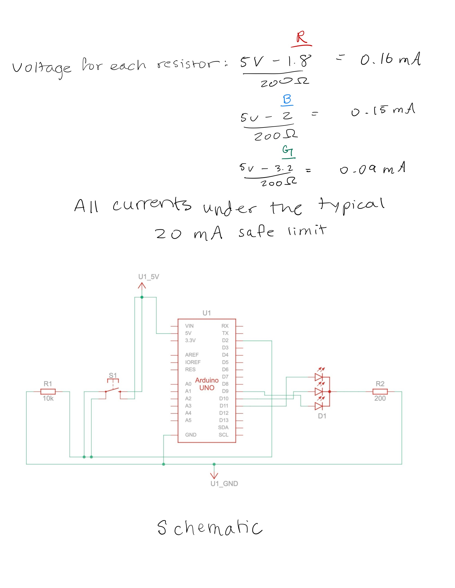
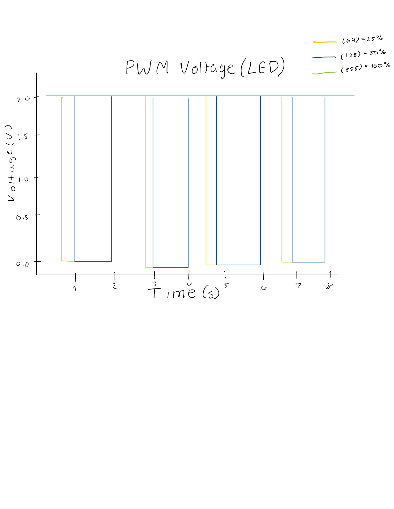

Overview

This assignment demonstrates a smooth RGB LED color fade using the Arduino’s PWM output pins. The LED transitions gradually through red, green, and blue tones when the button is pressed.
This assignment demonstrates a smooth RGB LED color fade using the Arduino’s PWM output pins. The LED transitions gradually through red, green, and blue tones when the button is pressed.
The following Arduino code fades an RGB LED through red, green, and blue channels. The button on pin 2 enables or disables the fading sequence.
// ---------------------------------------------------------
// A2: Fade — RGB LED PWM control with button input
// Button + RGB color fade
const int buttonPin = 2; // pushbutton pin
const int G = 10;
const int R = 11;
const int B = 9;
int buttonState = 0; // tracks button
void setup() {
pinMode(R, OUTPUT); // RGB pins as outputs
pinMode(G, OUTPUT);
pinMode(B, OUTPUT);
pinMode(buttonPin, INPUT);
// start off: all off
analogWrite(R, 0);
analogWrite(G, 0);
analogWrite(B, 0);
}
void loop() {
// read button
buttonState = digitalRead(buttonPin);
if (buttonState == HIGH) {
// Fade R up and down
for (int i = 0; i <= 255; i++) {
analogWrite(R, i);
delay(5);
}
for (int i = 255; i >= 0; i--) {
analogWrite(R, i);
delay(5);
}
// Fade G up and down
for (int i = 0; i <= 255; i++) {
analogWrite(G, i);
delay(5);
}
for (int i = 255; i >= 0; i--) {
analogWrite(G, i);
delay(5);
}
// Fade BLUE up and down
for (int i = 0; i <= 255; i++) {
analogWrite(B, i);
delay(5);
}
for (int i = 255; i >= 0; i--) {
analogWrite(B, i);
delay(5);
}
} else {
// button not pressed: all off
analogWrite(R, 0);
analogWrite(G, 0);
analogWrite(B, 0);
}
}

INPUT.

With an average LED current of about 7 mA and a 1200 mAh battery, the circuit could theoretically run for about 170 hours (7 days)
Measured LED voltages:
Red: ~2.0 V • Green: ~3.0 V • Blue: ~3.2 V
These closely match theoretical values. Small variations are expected due to LED color differences and current.
I used ChatGPT to help refine my resistor and current calculations, visualize the PWM voltage graph, and format this webpage similar to Assignment 1. I verified all calculations in Tinkercad and through testing.